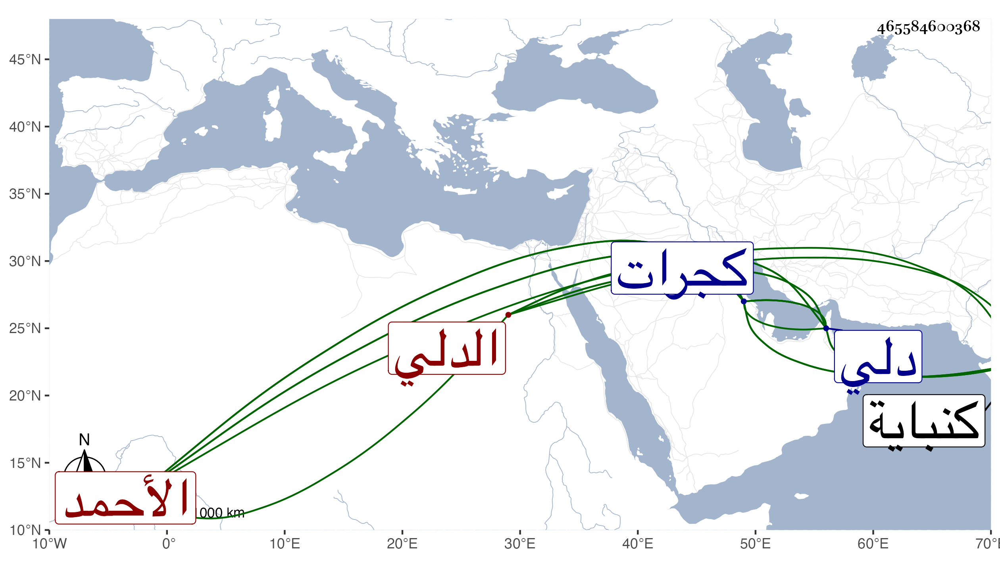

0902Sakhawi.DawLamic.ITO20230111-ara1.EIS1600.465584600368
Biography ID: 465584600368
574
محمود شاه بن محمد بن أحمد بن محمد بن مظفر ناصر الدين أبو الفتح بن غياث الدين الدلي الأصل الأحمد أبادي المولد . ولد سنة ثمان وأربعين تقريبا أسلم جد جده مظفر على يدي محمد شاه صاحب دلي وكان عاملا له على فتن من كجرات فلما وقعت الفتن في مملكة دلي وتقسمت البلاد كان الذي خص مظفر أكجرات ثم وثب عليه ابنه وسجنه واستقر عوضه ولم يلبث أن استفحل أمر الأب بحيث قتل ولده ثم بعد سنين انتصر أحمد لأبيه وقتل جده واستقر في كجرات وخلفه ابنه غياث الدين ثم ابنه قطب الدين ثم أخوه داود فلم يمكث سوى أيام وخلع واستقر أخوهم محمود شاه صاحب الترجمة وذلك في سنة ثلاث وستين حين كان ابن خمس عشرة سنة ودام في المملكة إلى الآن وأخذ من الكفار قلعة الشابانية فابتناها مدينة وسماها محمد أباد ومن جملة ممالكه كنباية وقد أشير لبعض ما ذكر في أحمد أباد من الأنساب .
